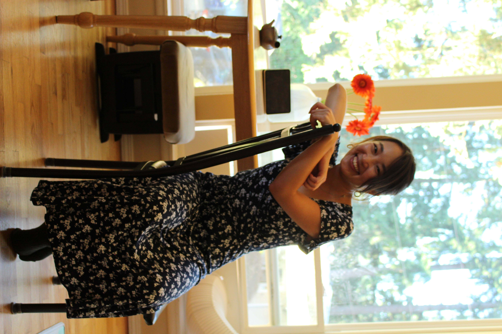

Hello! I am Yuuka, a postdoc in physics.
My research interest is in
Monte-Carlo simulation of relativistic nuclear collisions.
You want to know more? Visit aboutme ! 
Research Assistant
Faculty of Science and Technology, Sophia University
Research Fellowship (DC1)
Japan Society for the Promotion of Science
Postdoctoral Researcher
Department of Physics, University of Jyväskylä
"In order to study the question of vacuum, we must turn to a different direction; we should investigate some "bulk" phenomena by distributing high energy over a relatively large volume." T.D.Lee (1975)